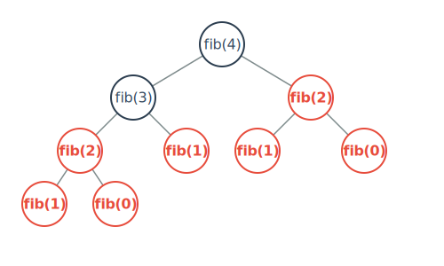

Visualization & Analysis: Your X-Ray Vision
To truly understand a recursive algorithm's performance, you must be able to visualize it.
1. The Recursion Tree
This is your primary tool. Each function call is a node, and its children are the recursive calls it makes. This immediately reveals the structure and potential inefficiencies.
Example: `fibonacci(4)`
Notice the repeated computations for `fib(2)` and `fib(1)`. This is a giant clue: overlapping subproblems. This tells you that Dynamic Programming is a good optimization strategy.
2. The Recurrence Relation
This is the mathematical formula for the time complexity, `T(n)`. It's defined as: `T(n) = (Work in one call) + T(subproblems)`.
- Factorial:
T(n) = T(n-1) + O(1) - Fibonacci:
T(n) = T(n-1) + T(n-2) + O(1) - Merge Sort:
T(n) = 2T(n/2) + O(n)
3. Deriving Time Complexity
The Master Theorem is a shortcut for recurrences of the form T(n) = aT(n/b) + f(n). Compare f(n) to nlogba.
For Merge Sort (`a=2, b=2, f(n)=n`), we compare `n` with `nlog22 = n`. This is Case 2, so complexity is `O(n log n)`.